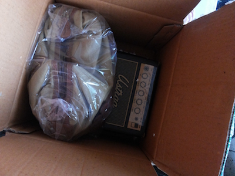
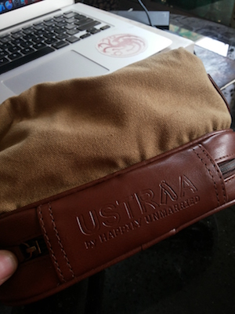

Ustraa Subscription First Impressions
TL;DR: Witty text all around, clever packaging. Great products.
TL;DR: Witty text all around, clever packaging. Great products.
Yesterday I received the first (of three) shipments from my Ustraa subscription packages. The subscription consists of a box designed like an amplifier, with a Body Wash, Face Wash and Shaving Cream.
This review is not an exhaustive review. It’s just a first impressions of the products and the packaging.
Opening the main box - which, by the way, looks cool as hell - revealed the Ustraa Travel Kit kept inside a polythene wrap. While the kit isn’t a part of the subscription, it came as part of an offer (check it out!).
I planned on keeping the kit aside and checking out the products first, but the kit looked good enough that I checked that out first.
Below that were the three products I had actually ordered, packed in nice metal cans, perfectly covered with plastic. The cans were keeping in tone with the flavours of the products, which is why they are purple. I have no idea why the Body Wash came in a blue can, I was worried it might accidentally be the “Old School” flavour body wash, but it wasn’t (phew!)
Taking the plastic off the tin cans was easy enough, and once the plastic was removed, the caps were taken off and the cans turned upside down - out dropped the bottles.
Shaped like the bottles of old, they have a classic look about them. I like it.
Let’s face it, we all love freebies and complimentary stuff; and this travel kit priced at Rs. 699 on the site is one hell of a thing to receive as a freebie.
It’s made of canvas and PU and looks great!
There’s a main pocket and a pocket on the base that can be used to keep your shaving blades and stuff.
The “Ustraa” logo on the front done in golden on a brown square piece of PU looks nice and the “Ustraa by Happily Unmarried” on the backside of the kit is decent enough to pull it off with great style.
It’s a great thing to have, for sure, but not one you *definitely* need.
Smoke house is the flavour I chose, because it was described as being inspired from the woody smells of cigar rooms, whiskey bars, and Old clubs at hill stations, which immediately hits the right notes with me.
The first thing I did was to open the face wash and take a whiff to see if I liked the smell or not and I couldn’t detect any smell at all. Weird, right?
Turns out I could only smell it once I had broken the surface of the face wash.
“It was like magic.”
“There’s no such thing as magickkk!”
(Paraphrasing from Harry Potter and The Philosopher’s Stone)
Anyway, the smell was gooood. I mean, I like it, a lot.
Thing is, what remains of the smell once you wash the face wash/body wash off, is very low key, which actually kinda works for Smoke House, but I’m not sure what it will be like for other flavours they offer. Hopefully, it works for those flavours too, though.